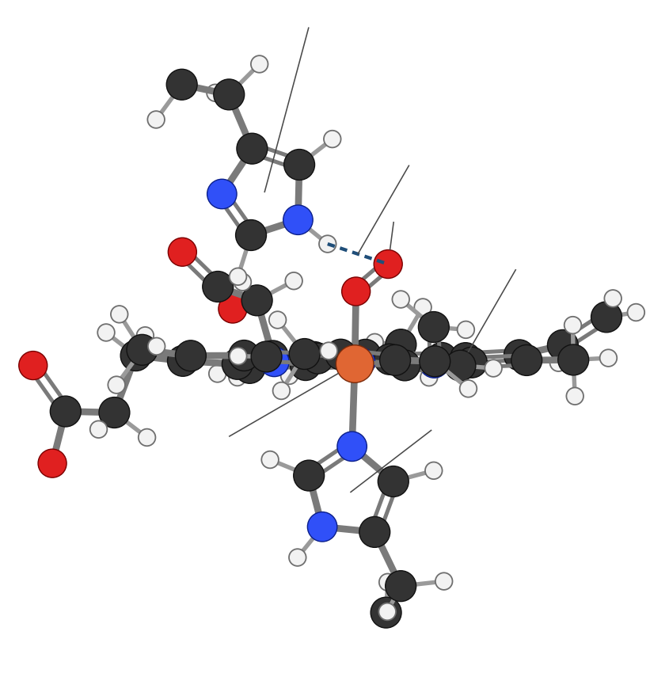

Protein from the atoms up: the four kinds of atom in an amino acid, the shared backbone and changing side chain, the peptide bond, all 20 amino acids drawn at one scale, how chains fold into working shapes, how you digest and use protein, and which foods give you all 9 essential amino acids. The figure is on the left and the lesson script on the right; the quiz is at the end.
Amino acids build up into peptides and proteins; food supplies the amino acids.
Protein on a food label
Protein (grams)Every gram gives about 4 kcal, the same as carbohydrate. The grams are total protein, whatever the source.
%DV is often missingIn the US the % Daily Value for protein is optional unless the package makes a protein claim or the food is for young children; then it is adjusted for protein quality.
Not listed: which amino acidsThe label doesn’t say whether a protein is complete. Figure 7 shows how to tell from the food itself.
Four kinds of atom, one shared backbone, one side chain that changes.
The atoms
Four atoms, four ways to bond
Carbon makes 4 bondsmethane, CH4
Nitrogen makes 3ammonia, NH3
Oxygen makes 2water, H2O
Sulfur makes 2hydrogen sulfide, H2S
Hydrogen makes just 1 bond. Every amino acid is built from these few atoms: carbon, hydrogen, oxygen and nitrogen, plus sulfur in two of them. Nitrogen is the atom that fats and carbohydrates don’t have.
The amino acid
Glycine, C2H5NO2 the simplest amino acid
123
1Amine group (NH2): a nitrogen with two hydrogens. This is the “amino” in amino acid.
2Alpha carbon: the centre that everything hangs on.
3Carboxyl group (COOH): the “acid”. Its OH can give up a hydrogen.
Alanine, C3H7NO2
1234
1Amine group, same as glycine.
2Alpha carbon, same as glycine.
3Carboxyl group, same as glycine.
4Side chain (R group): here a CH3. Glycine’s side chain is just one hydrogen. The side chain is the only part that differs between the 20 amino acids.
carbon hydrogen oxygen nitrogen sulfur · every molecule on this page is drawn at the same scale with every hydrogen shown · tap one to enlarge it
2…and one H of alanine’s amine group leave together as a water molecule.
3Peptide bond: the carbon of one amino acid now bonds straight to the nitrogen of the next (C–N), next to its C=O. This bond is strong and flat.
A chain grows
A tripeptide: Gly-Ala-Ser, C8H15N3O5
N12C
1First peptide bond.
2Second peptide bond. Each new amino acid adds one more and releases one more water.
NN-terminus: a free amine group starts every chain.
CC-terminus: a free carboxyl group ends it.
The repeating N–C–C, N–C–C pattern is the backbone. A chain of up to about 50 amino acids is usually called a peptide; longer ones are proteins. Most proteins are a few hundred amino acids long.
carbon hydrogen oxygen nitrogen · every molecule on this page is drawn at the same scale with every hydrogen shown · tap one to enlarge it
Backbone only (side chains left off), real helix geometry: 3.6 amino acids per turn. The bonds all run along the spiral's length, which holds it like a spring.
Beta sheet: strands side by side, C=O on one bonded to N–H on the next
C=ON–HNCNCNC
carbonnitrogenoxygenhydrogenhydrogen bond
Antiparallel: neighbouring strands run in opposite directions, N to C (the arrows). In a parallel sheet they all run the same way. Here the bonds run across, between strands, not along them. Backbone only, seen from above.
Held by hydrogen bonds between the C=O of one peptide bond and the N–H of another.
3 · Tertiary: the whole chain folds
Tertiary: one chain folds into its final shape
oily corewaterwaterS–SS–SNC
oily (hydrophobic) side chain, insidewater-loving (polar or charged) side chain, outsidesulfur: S–S cross-link between two cysteineswater (H₂O) all around
Cartoon, not to scale: the blue line is the chain, each ball a side chain. Water pushes the oily ones together in the middle; the charged and polar ones stay out in the water.
Shape decides the job: an enzyme’s pocket
enzymepocketright shape: fitswrong shape: doesn’t fit
Only the molecule that matches the pocket’s shape fits and gets worked on. If the chain unfolds, the pocket is lost.
Oily side chains tuck inside, water-loving ones face out, and sulfur cross-links between cysteines can hold the fold. The shape decides the job.
4 · Quaternary: chains team up
Hemoglobin: four chains, each with a heme
α chainβ chainβ chainα chainheme (see close-up)FeO₂
Cartoon, not to scale. Each heme’s iron holds one O₂, so one hemoglobin carries four. The close-up below shows one heme atom by atom.
Close-up: one heme in its pocket, atom by atom
The iron (Fe) sits in the middle of the flat ring. O₂ binds on top and His E7 hydrogen-bonds it (dashed line); His F8 holds the iron from below.
O₂His E7His F8Fe12345678E helixF helix
Side view: the same heme edge-on. The ring is flat; the iron sits in it, with O₂ and His E7 straight above and His F8 straight below.

O₂H-bondHis E7His F8Feflat ring
1pyrrole: a five-atom ring with one N; four of them make the heme ring
2methine bridge (=CH–) joining two pyrroles
3methyl, CH₃ (four on the ring)
4vinyl, CH=CH₂ (two)
5propionate, CH₂CH₂COO⁻ (two, charged, they face the water)
6valine E11
7phenylalanine CD1
8leucine FG3: 6 to 8 are oily side chains (sticks) that keep water away from the iron
carbon hydrogen oxygen nitrogen iron (Fe²⁺) hydrogen bond protein backbone (helix) · same scale as every molecule on this page, every hydrogen shown
Real atom positions from the X-ray structure of oxygen-carrying human hemoglobin (Protein Data Bank 2DN1, 1.25 Å), one α chain; hydrogens added, since X-rays barely see them. In this structure the iron is bonded to the four ring nitrogens (2.0 Å) and sits almost exactly in the ring; the O₂ binds end-on (Fe–O 1.8 Å) and bends at 124°. In the side view the iron is drawn in front of the ring edge so you can see it.
Collagen: three chains wound into a rope
chain 1chain 2chain 3glycine
A triple helix. The white dots mark glycine: every third amino acid is glycine, the smallest one, the only one small enough to fit in the middle of the tight rope.
Hemoglobin is 4 chains (2 alpha, 2 beta), each holding one heme with an iron atom (orange) that carries oxygen. Collagen is 3 chains wound into a rope.
Cartoons, not to scale: each bead is a whole amino acid, and each ribbon is a stretch of chain. The helix and sheet are drawn ball-and-stick, backbone only. Tap any white panel to enlarge it.
Cooking unfolds proteins
Heat, acid, salt or whipping break the weak bonds that hold the folds, so the chain unravels: this is denaturing. Egg white turns from clear to white, milk curdles with lemon juice, meat firms up. The peptide bonds stay, so the amino acids are all still there; your stomach does the same thing with acid.
Back to amino acids, into the pool, and out as urea.
From plate to amino acids
Mouthchewing only; no protein digestion
Stomachacid unfolds proteins; pepsin cuts them into shorter pieces
Small intestinetrypsin and chymotrypsin from the pancreas, then enzymes on the gut wall, cut down to single amino acids and pairs or threes
Into the bloodabsorbed and carried to the liver first
The amino acid poolyour body’s supply, used to build proteins all day
The small intestine also absorbs some pairs and threes of amino acids, which are split inside the gut-wall cells.
What the pool is used for
BuildingMuscle, skin, hair, bone matrix (collagen) and the lining of the gut, all constantly broken down and rebuilt.
Working proteinsEnzymes that run chemical reactions, antibodies, hemoglobin and other carriers, and hormones such as insulin.
Fuel, lastAmino acids not needed for building are burned for energy (4 kcal per gram) or turned into glucose or fat. The body doesn’t store spare protein.
Getting rid of the nitrogen
Urea, CH4N2O how the nitrogen leaves
11
1Two nitrogens: when an amino acid is burned, its amine group comes off as ammonia, which is toxic. The liver packs it into urea, and the kidneys send it out in urine.
In your body: Protein builds and repairs every tissue and makes enzymes, antibodies and many hormones.
Too little: Too little over time causes muscle loss, slow healing, weaker immunity, thin hair and, in severe shortage, swelling from fluid (kwashiorkor) and poor growth in children.
Too much: Extra protein is burned or stored as fat, and makes more urea to clear, so you need a little more water. Very high intakes are a concern mainly for people with kidney disease.
Following one amino acid: alanine
Alanine, C3H7NO2its amine group (NH₂) holds the nitrogen; the rest is the carbon skeleton
The nitrogen → urea
1 · The amine group comes off. Alanine hands it to another molecule (transamination), and the liver then pulls it off as ammonia (deamination).
Ammonia, NH₃toxic, even in small amounts
2 · The urea cycle, in the liver. Two nitrogens, one from ammonia and one passed in by another amino acid (aspartate), are joined to one carbon and one oxygen, which come from CO₂.
Urea, CH4N2Oharmless and dissolves in water
3 · Out of the body: blood → kidneys → urine
The carbon skeleton → fuel, glucose or fat
What’s left once the amine group is gone is pyruvate: the same three carbons, with a C=O where the amine group was.
Pyruvate, C3H4O3drawn as pyruvic acid, like the amino acids
Then one of three fates:
Burned for energypyruvate → acetyl-CoA → citric acid cycle → CO₂ + water + energy (ATP)
Made into glucosein the liver, when blood sugar runs low
Made into fatwhen there’s more than you need: through acetyl-CoA into fatty acids
Every amino acid splits the same way: its nitrogen leaves as urea, and its carbon skeleton is burned or rebuilt. Same scale as every molecule on this page; tap one to enlarge it.
carbon hydrogen oxygen nitrogen · every molecule on this page is drawn at the same scale with every hydrogen shown · tap one to enlarge it
Which foods have all 9 essentials, and how to combine the rest.
Complete and incomplete foods
Food
Protein type
Lowest essential amino acid
Meat, poultry, fish
Complete
none
Eggs, milk, yogurt, cheese
Complete
none
Soybeans (tofu, tempeh, edamame)
Complete
none really (methionine a little low)
Quinoa, buckwheat
Complete, or close
none really
Beans, lentils, peas, chickpeas
Incomplete
methionine (and cysteine)
Wheat, rice, oats, corn
Incomplete
lysine
Nuts and seeds
Incomplete
lysine (most)
Putting plant proteins together
Limiting amino acidA protein is only as useful as its scarcest essential amino acid. Your body can’t build a protein when one is missing.
Beans + grainsBeans are low in methionine but rich in lysine; grains are the opposite. Together they cover each other: rice and beans, hummus and pita, peanut butter on whole-wheat bread.
Over the day is fineThe amino acid pool lasts for hours, so the foods don’t have to be eaten in the same meal, just over the course of the day.
How much you need
Adults: 0.8 g per kgThe US RDA is 0.8 grams of protein per kilogram of body weight per day: about 56 g for a 70 kg (154 lb) adult.
More at some stagesPregnancy and breastfeeding need more; growing children need more per kilogram; some research suggests older adults benefit from a little more.
Found inMeat, poultry, fish, eggs, dairy, beans, lentils, peas, soy, nuts, seeds and whole grains.
Tap a number or a name to see what that place does with it.
Digested to amino acids, then built back into the proteins that do almost every job in the body.
Holds about 40% of body protein: actin and myosin slide past each other to contract.
Pepsin, a protein enzyme, starts digesting the protein you eat.
Makes trypsin and other enzymes, and the protein hormones insulin and glucagon.
Finishes digestion and absorbs amino acids into the blood.
Makes albumin and clotting factors, and turns spare amino acids into energy and urea.
Hemoglobin carries oxygen from the lungs.
Make antibodies that tag germs.
Collagen makes skin strong; keratin makes hair and nails.
Collagen frames bone and makes tendons, ligaments and cartilage.
Builds neurotransmitters such as serotonin and dopamine from amino acids.
Remove urea, the nitrogen from spare amino acids.
A teaching statue, not an anatomy atlas: each number marks a typical place, not every one, and the left and right of the drawing are the statue’s right and left (you are facing it). Kidneys and adrenal glands sit behind the gut, so they are drawn dashed.
Whey and casein come from milk, and pea and soy powders from those plants. They give the same amino acids as the whole foods, without the fibre, vitamins and minerals that come along in the food.
Collagen is incomplete
Collagen, the most common protein in your body, is rich in glycine and proline but has almost no tryptophan, so on its own it’s an incomplete protein.
Gelatin is cooked collagen
Simmering bones and skin unfolds collagen into gelatin, which sets into a gel as it cools.
Protein quality scores
PDCAAS and DIAAS score proteins by their essential amino acids and how well they are digested. Milk, eggs and soy score near the top.
General education, not medical advice. Facts follow mainstream sources (US Dietary Guidelines, NIH Office of Dietary Supplements, standard biochemistry and food-science texts).
Quiz
Tap a question to see the answer
1. How many kcal does a gram of protein give?
About 4, the same as carbohydrate (Figure 1).
2. Which atom do proteins have that fats and carbohydrates don’t?
Nitrogen, in the amine group of every amino acid (Figure 2).
3. What three parts do all amino acids share, and what part differs?
An amine group, an alpha carbon and a carboxyl group are shared; the side chain (R group) differs (Figure 2).
4. What is released when a peptide bond forms?
One water molecule: an OH from one amino acid’s carboxyl and an H from the next one’s amine (Figure 3).
5. How many amino acids are essential? Name three.
![One heme in its pocket in hemoglobin, ball-and-stick with every hydrogen: a flat ring of four pyrroles joined by CH bridges, its four nitrogens (blue) holding an orange iron atom at the centre. Above the iron an oxygen molecule (two red atoms) is bound end-on and bent; the distal histidine E7 above it hydrogen-bonds the far oxygen (dashed line). Below, the proximal histidine F8 is bonded to the iron. Valine, phenylalanine and leucine side chains (sticks) line the pocket, and pale blue tubes trace the E and F helices of the protein chain.](img/macronutrients-protein/heme_pocket.png)